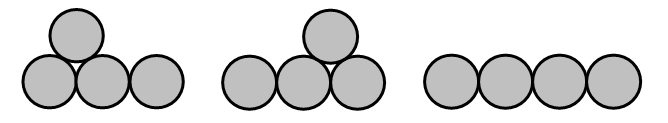
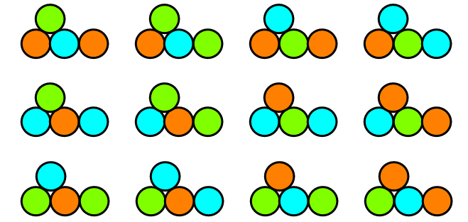

Project Euler 519
Project Euler 519
题目
Tricoloured Coin Fountains
An arrangement of coins in one or more rows with the bottom row being a block without gaps and every coin in a higher row touching exactly two coins in the row below is called a fountain of coins. Let \(f(n)\) be the number of possible fountains with \(n\) coins. For \(4\) coins there are three possible arrangements:

Therefore \(f(4)=3\) while \(f(10)=78\).
Let \(T(n)\) be the number of all possible colourings with three colours for all \(f(n)\) different fountains with \(n\) coins, given the condition that no two touching coins have the same colour. Below you see the possible colourings for one of the three valid fountains for \(4\) coins:

You are given that \(T(4)=48\) and \(T(10)=17760\).
Find the last \(9\) digits of \(T(20000)\).
解决方案
按照定义，硬币堆不会产生封闭的内部洞穴。所以常见的是开口型空隙，不是完全被包围的空腔。最终把硬币按三角晶格摆放后，从左到右看每一条斜对角线左下到右上，记其长度为\(d_1,d_2,\dots,d_k, d_i\ge 1.\)总硬币数为\(\displaystyle\sum_{i=1}^k d_i=n.\)喷泉的支撑条件等价为：相邻两条对角线满足\(d_{i+1}\ge d_i-1.\)也就是向右走一步，长度可以涨很多，但最多只允许下降 1。完整喷泉在最右端必须收回到底层，因此最后一条对角线长度是 \(1\)，即 \(d_k=1\)。
目前，颜色集合是 3 色，要求相邻硬币异色。在三角格上，若两枚相邻硬币颜色已定且不同，则与它们共同构成小三角形的第三枚硬币颜色被唯一确定（此时只能取第三种颜色）。因此在一个长度至少 2 的部分里，一旦固定某一对相邻硬币颜色，后续颜色全部被强制确定。由此得到自由度：
- 对于首个块，长度 1：有 \(3\) 种；长度 \(>1\)：先选第一枚 \(3\) 种，再选与其相邻一枚 \(2\) 种，共 \(6\) 种。
- 对于后续块（左侧已有接触硬币） 新起长度 1：只有 \(2\) 种；新起长度 \(>1\)：第一枚 \(2\) 种，邻接第二枚再 \(2\) 种，共 \(4\) 种。
- 若前一条对角线长度 \(\ge 2\)，继续延展时不再产生新自由度（也就是倍数是1）。
定义\(f(c,h)\)为：使用了 \(c\) 枚硬币，且最后一条对角线长度为 \(h\) 的合法着色方案数。我们要的是完整喷泉，所以答案是\(T(n)=f(n,1).\)那么状态转移方程可以写成：
\[ f(i,j)= \left\{ \begin{aligned} &3 && \text{if}\quad i=1\land j=1\\ &6 && \text{if}\quad i=j\land i\ge 2\\ &2f(i-1,1)+f(i-1,2) && \text{if}\quad i\ge 2\land j=1\\ &4f(i-j,1)+\sum_{y=2}^{j+1}f(i-j,y) && \text{if}\quad i>j\land j\ge 2\\ &0 && \text{otherwise} \end{aligned} \right. \]
可见，对于一些初值，有\(f(1,1)=3\)（只有一枚硬币）；对 \(h\ge 2\)，\(f(h,h)=6\)（只有第一条对角线，长度 \(h\) 的起始情形）。
对于方程第三行，对应着最后一条长度为 \(1\) 时，前一条只能是 \(1\) 或 \(2\)（因为不能下降超过 \(1\)）。
对于方程第四行，若最后一条是 \(h(h\ge 2)\)，则前一条长度 \(y\) 可为 \(1\) 或 \(2,\ldots ,h+1\)：也就是说从 \(y=1\) 跳到 \(h\ge2\)：新起多点块，乘 \(4\)；或者从 \(y\ge2\) 过来：颜色被强制，乘 \(1\)。
若最大对角线长度为 \(H\)，仅把高度从 \(1\) 升到 \(H\) 至少要\(\dfrac{H(H+1)}2\)枚硬币，所以\(\dfrac{H(H+1)}2\le n.\)因此\(H=O(\sqrt n).\)
为把求和降到 \(O(1)\)，设\(\displaystyle s(c,t)=\sum_{y=1}^t f(c,y).\)则方程第四行的求和可以由前缀和代替：\(\displaystyle\sum_{y=2}^{h+1} f(c-h,y)=s(c-h,h+1)-s(c-h,1).\)
代码
1 | from tools import int_sqrt |